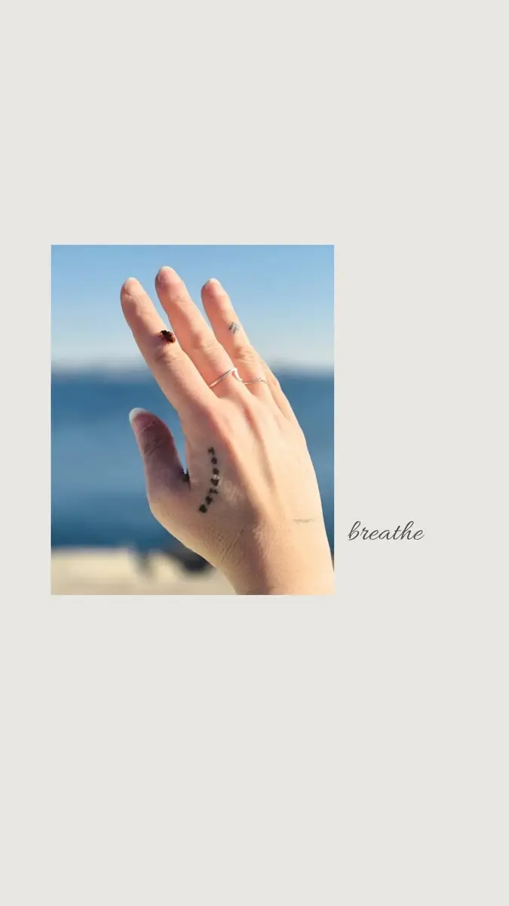
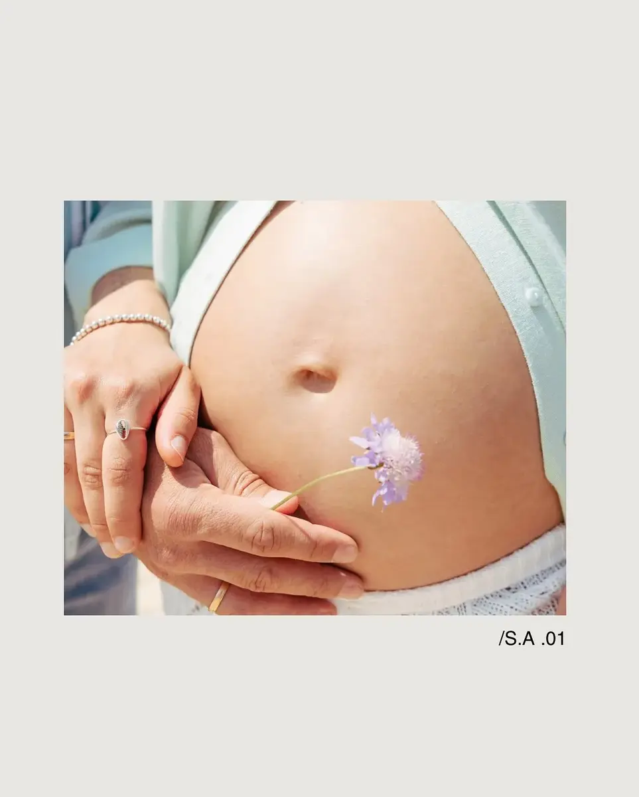
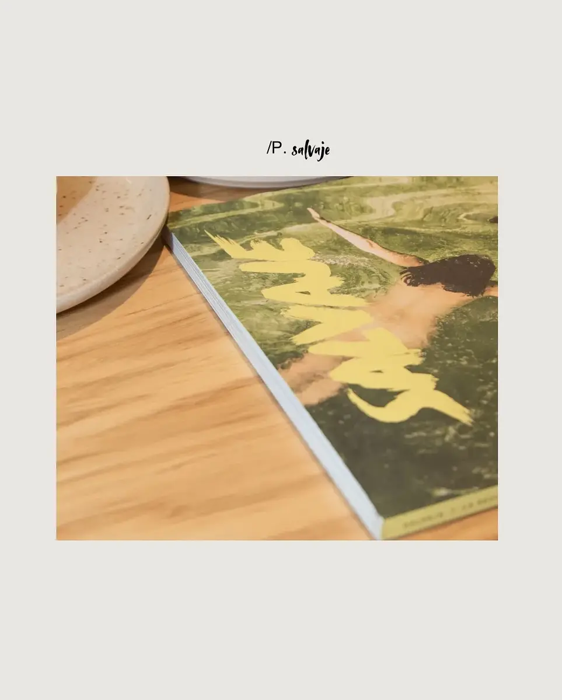

Respirar frente al agua
Una secuencia breve sobre piel, viento y gestos mínimos. Imágenes que no buscan imponerse, sino quedarse flotando.
Historias
Una forma de estar sin invadir; de observar sin dirigir. Bodas contadas desde la luz, la calma y todo lo que ocurre entre momentos.

Una secuencia breve sobre piel, viento y gestos mínimos. Imágenes que no buscan imponerse, sino quedarse flotando.

La maternidad aparece aquí como un espacio suave. Sin poses rígidas, sin ruido, con tiempo para mirar despacio.

Las marcas también se cuentan en texturas, superficies y silencios. El encuadre ordena y deja que cada elemento respire.
Una escena cotidiana puede convertirse en relato cuando la luz y el ritmo tienen una intención clara.
Proceso
No hace falta producir demasiado para conseguir imágenes memorables. La clave está en observar bien, simplificar y dejar solo aquello que verdaderamente suma.
Entender qué emoción, qué mensaje o qué etapa quieres guardar en imágenes.
Elegir luz, ritmo, localización y detalle para que la sesión tenga sentido narrativo.
Reducir el ruido hasta quedarnos con una selección que se sienta sólida y atemporal.